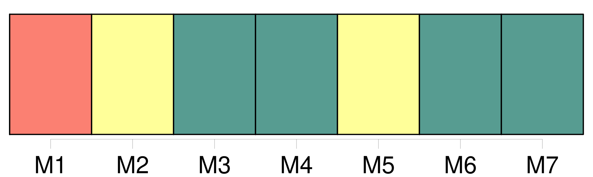
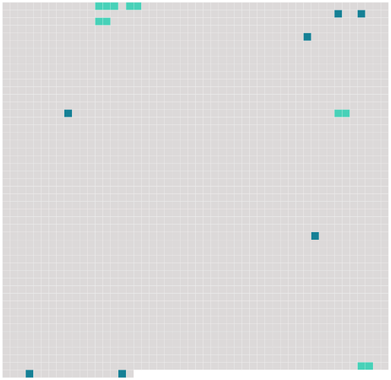

Longueur nb maillons : 12 mentions |
  |
LA ROUILLE [2 phrases] Il ne parlait que de [chasse] , rêvait [chasse] , répétait sans cesse : « Doit -on être malheureux quand on n'aime pas [la chasse] !! [3 phrases]
Il habitait, au milieu des bois, un petit manoir, dont il avait hérité ; et bien qu'il connût toute la noblesse du département et rencontrât tous ses représentants mâles dans les rendez -vous de [chasse] , il ne fréquentait assidûment qu'une famille : les Courville, des voisins aimables, alliés à sa race depuis des siècles. [18 phrases]
Aussi, dès qu'un instant de silence se faisait entre deux phrases, dans ces moments de brusques accalmies qui coupent la rumeur des paroles, on entendait tout à coup un air de [chasse] : « Ton ton, ton taine ton ton », que le baron poussait en gonflant les joues comme s'il eût tenu son cor. Il n'avait jamais vécu que pour [la chasse] et vieillissait sans s'en douter ni s'en apercevoir. [35 phrases] » et il venait tous les soirs maintenant pour causer [chasse] [59 phrases] Depuis vingt ans, mon ami, je ne vis que pour [la chasse] Je n'aime que [ça] , vous le savez, je ne m'occupe que de [ça] |
 |
La ressource peut être téléchargée sur la page Ortolang
Si vous avez des questions ou vous voyez des erreurs, merci d'envoyer un mail à silvia.federzoni89@gmail.com
Site développé par S. Federzoni (contact)